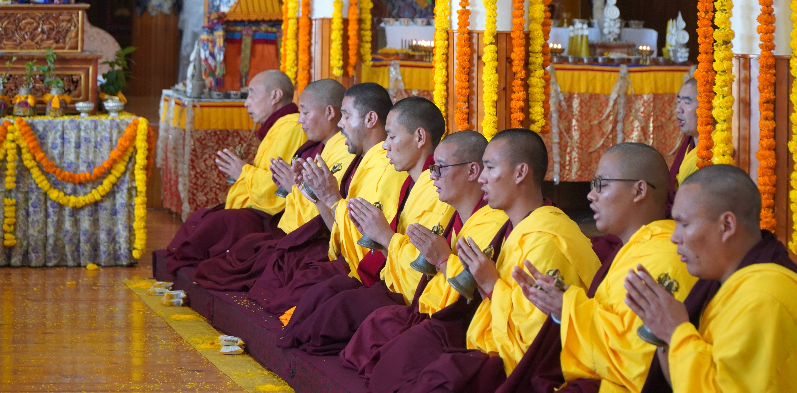

— About
See Different.
Off the Line | New Horizons.
Out.Track Studio is a creative space at the intersection of art, photography, perspective and exploration. From the most natural and wild landscapes to urban environments, each project reflects a desire to step beyond limits : Physically, mentally and creatively.
Out.Track Studio est un espace créatif au croisement de l'art, la photographie, la perception et l'exploration. Des territoires reculés aux milieux urbains, chaque projet incarne une volonté de repousser les limites.
— Portfolio
— Projects
Seen from the sky, the world shifts into abstraction. Cities and landscapes become fields of lines, textures and shadows, where structure emerges beyond immediate perception. This series explores the balance between natural forms and human imprints, revealed only through distance.
Vu du ciel, le monde bascule dans l'abstraction. Villes et paysages deviennent des champs de lignes, de textures et d'ombres, où une structure se révèle au-delà de la perception immédiate. Cette série explore l'équilibre entre formes naturelles et empreintes humaines, qui ne se dévoile qu'à distance.
— Projects
In this serie, mountains are no longer anchored to the ground. The towering 8,000 meter peaks of the Himalaya along with the mountains of the Andes, are inverted. Their monumental forms are softened into abstract compositions. By flipping these iconic landscapes, the series transforms breathtaking high-altitude panoramas into a surreal realm, where horizons bend, peaks float, and perspectives dissolve. Each image invites the viewer to reconsider the mountains, not merely as geological giants, but as almost dreamlike sculptures, suspended between reality and imagination.
Dans cette série, les montagnes ne sont plus ancrées dans le sol. Les sommets himalayens de 8 000 mètres et les montagnes des Andes, sont inversés. Leurs formes monumentales sont adoucies en compositions abstraites. En renversant ces paysages emblématiques, la série transforme des panoramas d'altitude saisissants en un univers surréaliste, où l'horizon se plie, les sommets flottent et les perspectives se dissolvent. Chaque image invite le regard à reconsidérer les montagnes, non plus comme des géants géologiques, mais comme des sculptures oniriques, suspendues entre réalité et imagination.
— Projects
India is often described as a country that unsettles, that leaves a lasting impression on those who travel through it. One is confronted with a constant human density, an unending flow of bodies, gazes, gestures, voices, sounds and colors. This is also a country of extreme contrasts, shaped by deeply diverse social, cultural, religious and spiritual realities. Noise and silence. Dense crowds and inner solitude. Harsh living conditions and the gentleness of certain gazes. The intensity of collective rituals and the intimacy of individual moments. In an environment where everything flows and collides, portraiture becomes a pause, a suspended moment, a silent relationship between two presences : the person photographed and myself. To photograph a face within the crowd is to attempt to create a space of encounter where everything seems destined for anonymity, to reveal a singular presence within the mass.
L'Inde est souvent décrite comme un pays qui bouleverse, qui marque durablement celles et ceux qui la traversent. On y est confronté à une densité humaine permanente, à un flot continu de corps, de regards, de gestes, de voix, de sons et de couleurs. C'est également un pays de contrastes extrêmes, porteur de réalités sociales, culturelles, religieuses et spirituelles bien différentes. Bruit et silence. Foule compacte et solitude intérieure. Rudesse des conditions de vie et douceur de certains regards. Intensité des rituels collectifs et extrême intimité de certains moments individuels. Dans un environnement où tout circule, où tout se bouscule, le portrait devient un arrêt, une pause, un moment de relation silencieuse entre deux présences : celle de la personne photographiée et la mienne. Photographier un visage dans la foule, c'est tenter de créer un espace de rencontre là où tout semble voué à l'anonymat. C'est faire émerger une singularité dans une masse.
The choice of black and white was a long and almost conflicted decision. India is a country of color : omnipresent, structuring and deeply meaningful. Color runs through clothing, festivals, religious rituals, social markers, cultural and spiritual identities. Certain colors signify status, roles or life stages : marriage, mourning, religious devotion or community belonging. Color is, in many ways, a visual language, often codified. By choosing to present this work in black and white, I chose to suspend that language. This gesture doesn't aim to deny the chromatic richness of India, but to shift the viewer's gaze. Black and white partially erases visible markers of religious, social and cultural identity, removing some of the immediate references that shape interpretation. It also draws attention to the texture of the skin, the lines, the scars, the play of light across features and the depth of a gaze. Where color can sometimes seduce, distract, or exoticize, black and white introduces a form of restraint.
The portraits presented here don't claim to represent India. They are partial, subjective and situated encounters. Faces of men, women and children, from different generations, religions and social backgrounds. It's impossible to grasp the complexity of a country of over a billion people through a handful of portraits. This project embraces that limitation : it doesn't seek exhaustiveness, but rather the intensity of certain encounters.
Le choix du noir et blanc a été un geste longuement hésité, presque conflictuel en réalité. L'Inde est un pays de couleurs. La couleur y est omniprésente, structurante, signifiante. Elle traverse les vêtements, les nombreuses fêtes, les rituels religieux, les signes sociaux, les appartenances culturelles et spirituelles. Certaines couleurs indiquent des statuts, des rôles, des situations de vie : mariage, veuvage, engagement religieux, appartenance communautaire. La couleur est un langage visuel, souvent codifié finalement. En choisissant de présenter ce travail en noir et blanc, je fais le choix de suspendre ce langage. Ce geste ne vise pas à nier la richesse chromatique de l'Inde, mais à déplacer le regard. Le noir et blanc gomme partiellement les marqueurs visibles d'appartenance religieuse, sociale ou culturelle. Il retire au spectateur certains repères immédiats qui orientent l'interprétation. Il permet de recentrer l'attention sur la texture de la peau, les rides, les cicatrices, la lumière sur les traits, la profondeur d'un regard. Là où la couleur peut parfois séduire, distraire ou exotiser, le noir et blanc impose une forme de dépouillement.
Les portraits présentés ne prétendent en aucun cas bien sûr représenter l'Inde. Ils sont des rencontres partielles, subjectives et situées. Ce sont des visages d'hommes, de femmes et d'enfants, de générations différentes, de religions et milieux sociaux variés. Il est impossible de saisir la complexité d'un pays de plus d'un milliard d'habitants en quelques portraits. Ce projet assume cette limite : il ne cherche pas l'exhaustivité, mais l'intensité de certaines rencontres.

— Projects
In the immensity of the Himalayas, familiar markers gradually fade, as do the boundaries between earth and sky. Distances stretch, time slows, and the body finds a new rhythm, guided by effort, by the presence of colorful prayer flags and the turning of Buddhist prayer wheels. From Nepal to Tibet, this series emerges from long journeys through mountains that are as sacred as they are extraordinary, across the « Annapurna Circuit », the « Everest Three Passes Trek », and the Kora around Mount Kailash. Between vast horizons and more intimate moments, the images capture a world where human presence feels both fragile and deeply grounded. More than a journey through space, it becomes an exploration of perception, where each step, each breath, invites an inner dialogue. In these extreme landscapes, where altitude intensifies every sensation, the body becomes a measure of the mountain range itself a space that calls for humility and contemplation.
Dans l’immensité de l’Himalaya, les repères s’estompent peu à peu, tout comme les frontières entre terre et ciel. Les distances s’étirent, le temps ralentit, et le corps trouve un nouveau rythme, guidé par l’effort, les drapeaux colorés et les moulins de prières boudhistes. Du Népal au Tibet, cette série est issue de longues marches au milieu de montagnes aussi sacrées qu’extraordinaires, au travers du Grand tour des Annapurnas, du Trek des hauts cols de l’Everest, et de la Kora du Mont Kailash. Entre horizons infinis et instants plus intimes, les images captent un monde où la présence humaine paraît à la fois fragile et ancrée. Plus qu’un déplacement, c’est une exploration de la perception, où chaque pas, chaque souffle, invite au dialogue intérieur. Dans ces paysages extrêmes, où l’altitude intensifie chaque sensation, le corps devient une mesure de cette chaine de montagne, qui appelle à l’humilité et la contemplation.
— Projects
This work traces a journey of several months across Southeast Asia : Myanmar, Thailand, Vietnam, Laos, Cambodia and China ; a trip shaped by the diversity of landscapes and cultures. Between movement and contemplation, this territory reveals itself as deeply contrasted, both fascinating and disorienting. Places of worship and ancestral temples, rice fields evolving with the seasons, sunsets over rivers, encounters with wildlife in both natural and urban environments, and scenes of daily life shaped by religious rituals… These images capture fleeting moments and suspended instances of a world in constant motion, offering glimpses into a different way of seeing and inhabiting reality.
Ce travail retrace un itinéraire de plusieurs mois au travers l’Asie du Sud-Est : Birmanie, Thaïlande, Vietnam, Laos, Cambodge et Chine ; un voyage marqué par la diversité des paysages et des cultures. Entre agitation et contemplation, ce territoire s’est avéré profondément contrasté, aussi fascinant que dépaysant. Lieux de culte et temples ancestraux, rizières se transformant au fil des saisons, couchers de soleil sur les fleuves, rencontres animales dans des espaces naturels comme en milieux urbains, ou encore scènes de vie ancrées dans un quotidien rythmé par les rites religieux… Ces images captent des instants fugaces et des moments suspendus d’un monde en perpétuel mouvement, autant d’immersions dans une autre façon de voir et d’habiter le réel.
Ton deuxième texte ici.
XXX
— Projects
From the altiplano of Bolivia to the jungles of Colombia, this series documents the nomadic experience across a continent of extremes — its colours, its silences, its wild contradictions.
— Projects
A visual journey through the borderlands of two worlds — the light of the Sahara meeting the textures of the Levant. Images that sit at the threshold between ancient cultures and shifting landscapes.
— Projects
High altitude photography at its most elemental — ice, rock, wind and silence. A tribute to the vertical world, where light changes in minutes and the horizon stretches to infinity.
— Projects
Wide open spaces, empty plains and the quiet drama of the horizon. This series is an exploration of scale — the smallness of the human figure against the vastness of the earth.
— Projects
In black and white, the city reveals a different language. Stripped of color, it becomes a composition of light, contrast, and geometry. From Paris to Berlin to Moscow, this series captures fragments of urban spaces : between movement and stillness, presence and absence. Through acts of exploration, sometimes through urbex, it ventures into the interstices of the city, revealing places suspended between oblivion and transformation.
En noir et blanc, la ville révèle un autre langage. Dépouillée de ses couleurs, elle devient un jeu de lumières, de contrastes et de géométries. De Paris à Berlin, jusqu’à Moscou, cette série capte des fragments d’espaces urbains : entre mouvement et immobilité, présence et absence. À travers des explorations, parfois en urbex, elle s’aventure dans les interstices de la ville, révélant des lieux laissés en suspens entre oubli et transformation.